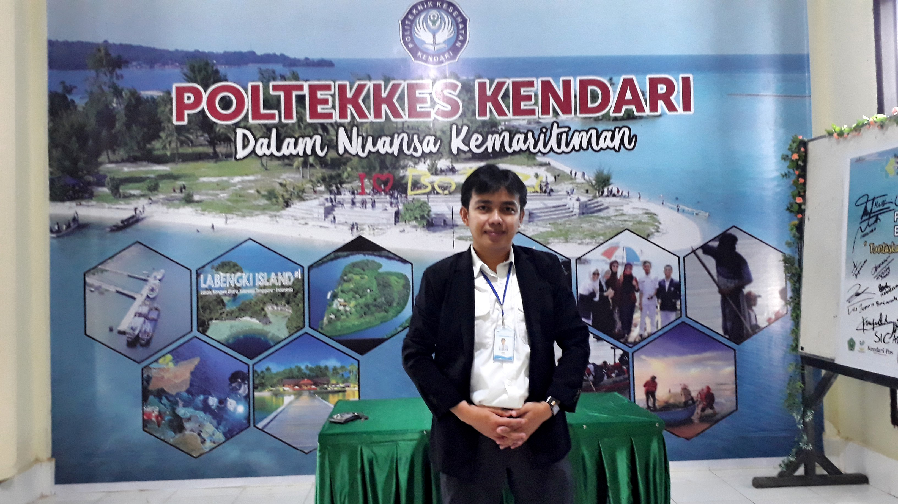
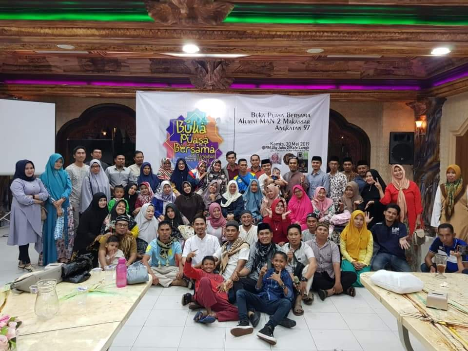

Biografi Ismail Djamaluddin
Saat ini perkembangan teknologi komputer seperti halnya aliran air di sungai yang terus mengalir tanpa henti. Kamu mungkin sudah menyadarinya bukan? Setiap waktu terus bermunculan teknologi-teknologi baru yang semakin maju dan canggih tentunya. Kemajuan teknologi ini tidak terlepas dari perkembangan berbagai disiplin ilmu pengetahuan di masa sebelumnya yang menjadi dasar perkembangan teknologi kedepannya. Salah satu ilmuwan yang memiliki peran penting dalam perkembangan teknologi terutama di bidang komputer adalah Al Khawarizmi.
Muhammad ibn Musa Al Khawarizmi dikenal sebagai matematikawan yang menemukan Aljabar dan juga merupakan bapak dari algoritma. Bagi sebagian orang yang berprofesi sebagai programmer atau developer tentunya algoritma ini sering kamu pergunakan saat melakukan pengembangan program. Jadi siapakah Al Khawarizmi ini? Yuk, mari kita kenali lebih jauh bapak dari algoritma dan penemu aljabar ini.
Aktifitas Utama
Al-Khawarizmi memiliki nama lengkap Muhammad ibn Musa Al Khwarizmi, sedangkan di negara-negara barat Al Khawarizmi dikenal dengan sebutan Al Goritmi, Al Gorismi, Al Cowarizmi, dan sebutan dengan ejaan yang lainnya. Al Khawarizmi lahir sekitar tahun 780 M di Khawarizm jika sekarang tempat kelahirannya dikenal dengan kota Khiva di Uzbekistan. Keluarga beliau merupakan turunan Persia yang telah menetap di Khawarizm, namun dari beberapa catatan sejarah diketahui bahwa beliau ketika kecil pindah bersama keluarganya ke selatan kota Baghdad, sehingga di sinilah beliau meniti karirnya sebagai seorang matematikawan.
Beliau diperkirakan hidup di masa khalifah Abbasiyah Al-Ma’mun, Al-Mu’tashim dan Al-Watsiq yang dikenal sebagai masa keemasan ilmu pengetahuan di daerah Arab berkat translasi buku dan ilmu pengetahuan ke dalam bahasa Arab. Pada masa itu terdapat Bait Al-Hikmah yang menjadi pusat penelitian, penerjemahan buku ke dalam bahasa Arab, dan juga publikasi ilmu pengetahuan yang dilakukan oleh para cendekiawan muslim tak terkecuali Al Khawarizmi.
Al Khawarizmi bergabung bersama cendekiawan yang lain di Bait Al-Hikmah ketika berusia 20 tahun. Semasa hidupnya beliau bekerja di Sekolah Kehormatan yang didirikan oleh Khalifah Al-Ma’mun. Di sanalah beliau banyak menulis berbagai gagasan dan mempublikasikan buku ilmu pengetahuan baik di bidang matematika, astronomi, sejarah maupun geografi, termasuk mempelajari terjemahan literatur sansekerta dan Yunani.
Karya pertama beliau dipublikasikan dalam buku al-Jabar (Al-Kitāb al-mukhtaṣar fī ḥisāb al-jabr wa-l-muqābala), buku tersebut merupakan buku pertama yang menjelaskan solusi sistematik dari linear dan notasi kuadrat. Berkat karya tersebutlah beliau dijuluki sebagai Bapak Aljabar, selain itu buku tersebut juga membawa kontribusi dalam kebahasaan. Kata aljabar berasal dari kata al-Jabr yang tercantum di dalam bukunya.
Hasil pemikiran beliau dalam buku al-Jabar dianggap sebagai revolusi besar dalam bidang matematika. Beliau berhasil mengintegrasikan konsep-konsep geometri dari matematika yunani kuno ke dalam konsep matematika yang baru. Pemikirannya menghasilkan sebuah teori gabungan yang memungkinkan bilangan rasional, irasional, dan besaran-besaran geometri diperlakukan sebagai objek-objek aljabar.
Al Khawarizmi juga berkontribusi terhadap cabang aritmatika, hasil pemikirannya mengenai bidang ini dituangkan dalam karyanya yang berjudul Kitāb al-Jam’a wa-l-tafrīq bi-ḥisāb al-Hind. Kitab tersebut dikenal sebagai buku ilmu pengetahuan pertama yang ditulis menggunakan sistem bilangan desimal. Teori yang dibahas dalam buku tersebut merupakan titik awal penyeimbangan ilmu matematika dan sains dan dari buku tersebut juga lah cikal bakal dari algoritma muncul.
Di belahan Eropa, karyanya banyak ditranslasikan ke dalam bahasa Latin sebagai Algorithmi, Algorismi, Alchawarizmi sehingga di literatur barat Al Khawarizmi dikenal sebagai Algorizm. Sebutan inilah yang kemudian digunakan untuk menyebutkan konsep algoritma yang ditemukannya perhitungan logaritma yang sekarang banyak dipergunakan secara luas terutama di bidang komputer atau sains dan engineering yang berasal dari hasil pemikiran beliau.
Selain itu matematika biner yang digunakan dalam pemrograman juga didasari oleh konsep algoritma Al Khawarizmi. Perkembangan yang semakin maju bagi komputer digital dan pemrogramannya tak terlepas dari pemikiran beliau yang menjadi gerbang kemajuan. Kata algoritma sendiri yang kita kenal sekarang merupakan kata yang diambil dari kata algorismi yang dilatinisasi dari namanya.
Al Khawarizmi diperkirakan wafat pada tahun 850 M dan semasa hidupnya karyanya tidak seputar bidang matematika saja, namun banyak bidang dari ilmu pengetahuan yang ikut terpengaruh dari hasil pemikirannya tersebut. Seperti pada bidang geografi beliau menyempurnakan peta Ptolemeus dalam karya yang berjudul Kitāb ṣūrat al-Arḍ dan menurut Paul Gallez, hal ini sangat bermanfaat untuk menentukan posisi kita dalam kondisi yang buruk.
Aktifitas Pelatihan

Al Khawarizmi banyak memberikan pengaruh terhadap perkembangan ilmu pengetahuan dunia, diantaranya sebagai berikut :
- Menemukan konsep aljabar yang kita kenal sekarang melalui buku Al-Jabr yang berisi mengenai persamaan linear dan kuadrat.
- Orang yang pertama menjelaskan dan mempopulerkan kembali penggunaan angka nol (0) serta mengenalkan sistem notasi desimal dan tanda pengalian dua.
- Memperkenalkan tanda negatif pada bilangan.
- Membuat tabel perhitungan astronomi guna mengukur jarak dan kedalaman bumi. Tabel ini juga menjadi dasar untuk penelitian di bidang astronomi.
- Model pembuatan peta dunia yang dituliskan dalam buku ṣūrat al-Arḍ yang digunakan para ahli geografi barat dalam menggambar peta.
- Menemukan konsep alat penunjuk waktu dengan bayang sinar matahari dalam buku sundials.
- Menemukan konsep dasar algoritma melalui pembahasan aturan-aturan melakukan aritmatika menggunakan bilangan Hindu-Arab dan solusi sistematis.
Masih banyak lagi karya-karya beliau semasa hidupnya yang mempengaruhi ilmu pengetahuan saat ini. Selain ahli matematika Al Khawarizmi juga seorang ahli geografi, ahli astronomi, ahli astrologi, ahli sejarah bahkan teori mengenai seni musik dan lukis yang beliau tuliskan dalam bukunya. Beliau merupakan sosok yang cerdas dalam berbagai bidang dan menjadi cerminan identitas muslim yang sesungguhnya. Sebagai seorang muslim kamu seharusnya bangga sekaligus menjadi cambuk bagi kamu yang sering bermalas-malas atau kaum rebahan.
Aktifitas Organisasi

Ilmu pengetahuan matematika pada dasarnya sangat berperan dalam pengembangan komputer dan teknologi dari dahulu hingga sekarang dan peran itu tidaklah sedikit melainkan sangatlah besar, dan itu tak terlepas dari peran Al Khawarizmi di dalamnya. Kendati demikian namun sedikit yang mengenang jasa dari Al Khawarizmi.
Algoritma tidak bisa terlepas dan selalu berdampingan dengan perkembangan teknologi yang saat ini semakin maju. Bahkan untuk teknologi kecerdasan buatan sekalipun tak dapat pintar tanpa sistem algoritma dalam pemrogramannya.
Menurut David Berlinski dalam bukunya yang berjudul “The Advent of the Algorithm: The Idea that Rules the World” mengatakan dua gagasan terbentang gemerlap di atas beludru, yang pertama adalah kalkulus, yang kedua, algoritma. Kalkulus adalah gagasan yang memungkinkan sains modern menjadi mungkin. Algoritma adalah gagasan tentang prosedur yang efektif yang memungkinkan dunia modern menjadi mungkin.
Di samping algoritma, salah satu kontribusi yang dilakukan oleh Al Khawarizmi yang cukup besar untuk perkembangan bidang komputer adalah memperkenalkan angka 0 dalam sistem penomoran Arab, yang nantinya diadaptasi pada bidang komputer. Angka nol sendiri merupakan bagian yang ada dalam kode biner dan merupakan dasar dari pembentukan program komputer.
Angka nol sendiri digunakan kembali oleh George Boole seorang ahli matematika dan logika asal Inggris untuk merumuskan Aljabar Boolean. Bahkan aljabar sendiri merupakan salah satu konsep yang ditemukan oleh Al Khawarizmi. Aljabar boolean memiliki peran penting dalam evolusi digital untuk mewakili bentuk-bentuk logis dan silogisme dengan simbol-simbol aljabar dan logika melalui formula yang beroperasi pada 0 dan 1.
“Hidup hanya sekali, jangan menua tanpa adanya karya dan inspirasi” (Ridwan Kamil)
Dari kisah hidup Al Khawarizmi tersebut, kita dapat belajar satu hal penting, yaitu karya. Melalui karya tersebutlah kamu bisa diingat dan dikenang dan untuk bisa membuat karya tentunya kamu harus memiliki kemampuan dan kemampuan merupakan buah dari proses belajar. Oleh karena itu jika kamu berkeinginan membuat karya dalam bentuk program atau dalam bidang IT, sebaiknya kamu kembangkan kemampuan yang kamu punya dengan belajar di Dicoding, cek daftar kelasnya